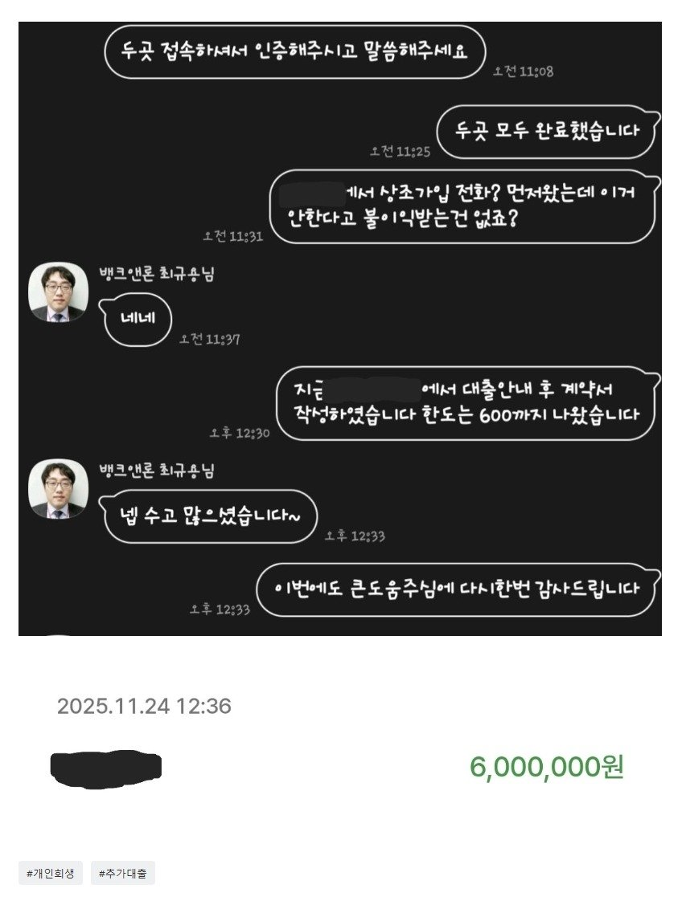

[개인회생자대출] 믿고 진행하는 최규용 과장님과 추가대출 성공건
재직형태: 직장인
재직기간: 2년 6개월
사대보험 가입유무: 유
소득: 연 4600만원
신용등급: 600미만(개인회생중)
채무내역: 대부대출 2곳 각 900만원씩 총 1800만원
필요서류: 신분증, 원초본, 건강보험 자격득실서, 건강보험 납입서
올해 8월 최규용 과장님덕에 대환조건으로 대부2곳에 대출성공하여 적지만 소액 가계자금까지 확보 할 수 있었습니다
헌데 이번에 생활자금이 조금더 필요하여 혹시나 하는 마음에 11월에 추가대출 신청하였고 두번째 진행한지라 기본 서류 제출 후 곧바로 대출가능한 업체 알아봐 주셨습니다
정말 빠르게 일사천리로 진행되었고 신청한 다음날 영업 오픈시간 되자마자 3시간도 안되어 입금까지 받았습니다
필요금액은 300정도였지만 한도 600까지 나와 넉넉히 받을 수 있었습니다
다시한번 최규용과장님의 능력에 놀라고 어떻게든 가계자금 확보 할 수 있도록 도움주신 최규용과장님께 다시한번 감사드립니다
두번째 진행이라 진행내용은 짧지만 그만큼 이미 다알고 빠르게 진행해주셔서 대화내용이 사실 별로 없었습니다 ㅎㅎ...

https://cafe.naver.com/cityman88/309538